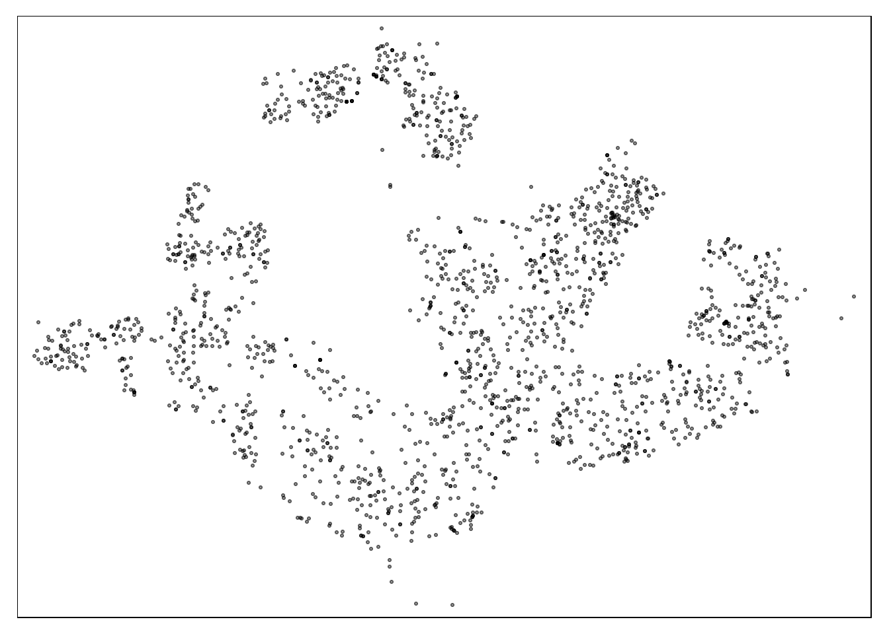
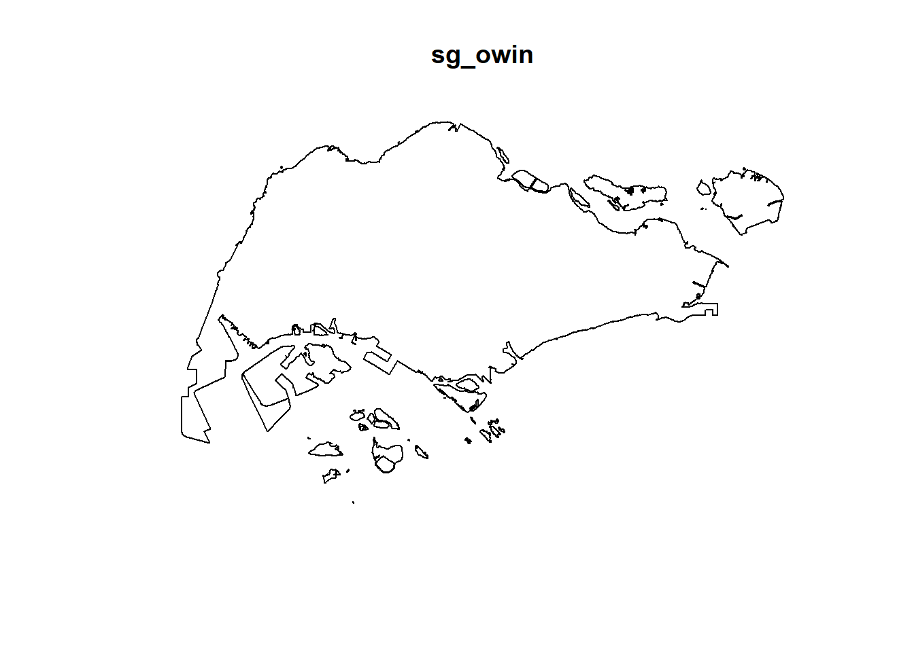
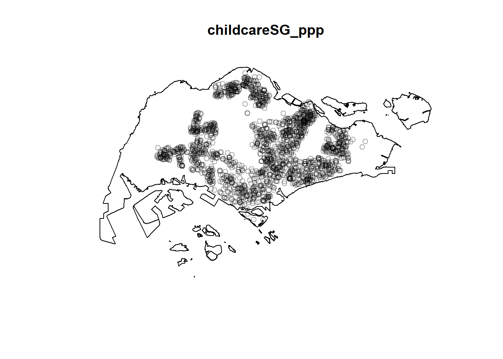

pacman::p_load(maptools, sf, raster, spatstat, tmap)Overview
here we are doing spatial point analysis where we are basically studying and analysing the spread of points in a space.
It helps us answer tje following questions:
- are the childcare centres in Singapore randomly distributed throughout the country?
- if the answer is not, then the next logical question is where are the locations with higher concentration of childcare centres?
Data
- childcare
- MP14_SUBZONE_WEB_PL
- CostalOutline
Installing and loading the R packages
We need to install and load the R packages into the R environment to use them
If you aren’t able to install maptools, do this:
install.packages("maptools", repos="http://R-Forge.R-project.org")Warning: package 'maptools' is in use and will not be installedSpatial Data Wrangling
Importing the spatial data
We will use the st_read() function of sf package to import geospatial datasets into R.
Let’s import the first one of ChildCareServices:
childcare_sf <- st_read("data/ChildCareServices.geojson")Reading layer `ChildCareServices' from data source
`C:\shaysnutss\IS1455-GAA\Hands-on_Ex\Hand-on_Ex03\data\ChildCareServices.geojson'
using driver `GeoJSON'
Simple feature collection with 1925 features and 2 fields
Geometry type: POINT
Dimension: XYZ
Bounding box: xmin: 103.6878 ymin: 1.247759 xmax: 103.9897 ymax: 1.462134
z_range: zmin: 0 zmax: 0
Geodetic CRS: WGS 84We can see that the CRS is not what we want let’s transform it to SVY21
childcare_sf <- st_transform(childcare_sf, crs = 3414)Let’s print out childcare_sf to see what is the CRS.
st_geometry(childcare_sf)Geometry set for 1925 features
Geometry type: POINT
Dimension: XYZ
Bounding box: xmin: 11810.03 ymin: 25596.33 xmax: 45404.24 ymax: 49300.88
z_range: zmin: 0 zmax: 0
Projected CRS: SVY21 / Singapore TM
First 5 geometries:POINT Z (40985.94 33848.38 0)POINT Z (28308.65 45530.47 0)POINT Z (17828.84 36607.36 0)POINT Z (25579.73 29221.89 0)POINT Z (38981.02 32483.41 0)Let’s import coastal outline.
sg_sf <- st_read(dsn = "data/geospatial", layer="CostalOutline")Reading layer `CostalOutline' from data source
`C:\shaysnutss\IS1455-GAA\Hands-on_Ex\Hand-on_Ex03\data\geospatial'
using driver `ESRI Shapefile'
Simple feature collection with 60 features and 4 fields
Geometry type: POLYGON
Dimension: XY
Bounding box: xmin: 2663.926 ymin: 16357.98 xmax: 56047.79 ymax: 50244.03
Projected CRS: SVY21When we look at the coordinate reference system of coastal outline, we see that the user input is SVY21 but the correct EPSG code is 9001 instead of 3414.
st_crs(sg_sf)Coordinate Reference System:
User input: SVY21
wkt:
PROJCRS["SVY21",
BASEGEOGCRS["SVY21[WGS84]",
DATUM["World Geodetic System 1984",
ELLIPSOID["WGS 84",6378137,298.257223563,
LENGTHUNIT["metre",1]],
ID["EPSG",6326]],
PRIMEM["Greenwich",0,
ANGLEUNIT["Degree",0.0174532925199433]]],
CONVERSION["unnamed",
METHOD["Transverse Mercator",
ID["EPSG",9807]],
PARAMETER["Latitude of natural origin",1.36666666666667,
ANGLEUNIT["Degree",0.0174532925199433],
ID["EPSG",8801]],
PARAMETER["Longitude of natural origin",103.833333333333,
ANGLEUNIT["Degree",0.0174532925199433],
ID["EPSG",8802]],
PARAMETER["Scale factor at natural origin",1,
SCALEUNIT["unity",1],
ID["EPSG",8805]],
PARAMETER["False easting",28001.642,
LENGTHUNIT["metre",1],
ID["EPSG",8806]],
PARAMETER["False northing",38744.572,
LENGTHUNIT["metre",1],
ID["EPSG",8807]]],
CS[Cartesian,2],
AXIS["(E)",east,
ORDER[1],
LENGTHUNIT["metre",1,
ID["EPSG",9001]]],
AXIS["(N)",north,
ORDER[2],
LENGTHUNIT["metre",1,
ID["EPSG",9001]]]]So here we change it to 3414.
Reminder we don’t use st_transform() because the CRS is already SVY21, it’s just the ESPG code that is wrong!
sg_sf <- st_set_crs(sg_sf, 3414)Warning: st_crs<- : replacing crs does not reproject data; use st_transform for
thatNow let’s recheck if the coordiante system and ESPG code match.
st_crs(sg_sf)Coordinate Reference System:
User input: EPSG:3414
wkt:
PROJCRS["SVY21 / Singapore TM",
BASEGEOGCRS["SVY21",
DATUM["SVY21",
ELLIPSOID["WGS 84",6378137,298.257223563,
LENGTHUNIT["metre",1]]],
PRIMEM["Greenwich",0,
ANGLEUNIT["degree",0.0174532925199433]],
ID["EPSG",4757]],
CONVERSION["Singapore Transverse Mercator",
METHOD["Transverse Mercator",
ID["EPSG",9807]],
PARAMETER["Latitude of natural origin",1.36666666666667,
ANGLEUNIT["degree",0.0174532925199433],
ID["EPSG",8801]],
PARAMETER["Longitude of natural origin",103.833333333333,
ANGLEUNIT["degree",0.0174532925199433],
ID["EPSG",8802]],
PARAMETER["Scale factor at natural origin",1,
SCALEUNIT["unity",1],
ID["EPSG",8805]],
PARAMETER["False easting",28001.642,
LENGTHUNIT["metre",1],
ID["EPSG",8806]],
PARAMETER["False northing",38744.572,
LENGTHUNIT["metre",1],
ID["EPSG",8807]]],
CS[Cartesian,2],
AXIS["northing (N)",north,
ORDER[1],
LENGTHUNIT["metre",1]],
AXIS["easting (E)",east,
ORDER[2],
LENGTHUNIT["metre",1]],
USAGE[
SCOPE["Cadastre, engineering survey, topographic mapping."],
AREA["Singapore - onshore and offshore."],
BBOX[1.13,103.59,1.47,104.07]],
ID["EPSG",3414]]Now let’s import MP_14_SUBZONE_WEB_PL.
mpsz_sf <- st_read(dsn = "data/geospatial",
layer = "MP14_SUBZONE_WEB_PL")Reading layer `MP14_SUBZONE_WEB_PL' from data source
`C:\shaysnutss\IS1455-GAA\Hands-on_Ex\Hand-on_Ex03\data\geospatial'
using driver `ESRI Shapefile'
Simple feature collection with 323 features and 15 fields
Geometry type: MULTIPOLYGON
Dimension: XY
Bounding box: xmin: 2667.538 ymin: 15748.72 xmax: 56396.44 ymax: 50256.33
Projected CRS: SVY21Let’s check the coordinate system, it has to be SVY21 so that it is projected coordinate system, and the ESPG code has to match the SVY21.
st_crs(mpsz_sf)Coordinate Reference System:
User input: SVY21
wkt:
PROJCRS["SVY21",
BASEGEOGCRS["SVY21[WGS84]",
DATUM["World Geodetic System 1984",
ELLIPSOID["WGS 84",6378137,298.257223563,
LENGTHUNIT["metre",1]],
ID["EPSG",6326]],
PRIMEM["Greenwich",0,
ANGLEUNIT["Degree",0.0174532925199433]]],
CONVERSION["unnamed",
METHOD["Transverse Mercator",
ID["EPSG",9807]],
PARAMETER["Latitude of natural origin",1.36666666666667,
ANGLEUNIT["Degree",0.0174532925199433],
ID["EPSG",8801]],
PARAMETER["Longitude of natural origin",103.833333333333,
ANGLEUNIT["Degree",0.0174532925199433],
ID["EPSG",8802]],
PARAMETER["Scale factor at natural origin",1,
SCALEUNIT["unity",1],
ID["EPSG",8805]],
PARAMETER["False easting",28001.642,
LENGTHUNIT["metre",1],
ID["EPSG",8806]],
PARAMETER["False northing",38744.572,
LENGTHUNIT["metre",1],
ID["EPSG",8807]]],
CS[Cartesian,2],
AXIS["(E)",east,
ORDER[1],
LENGTHUNIT["metre",1,
ID["EPSG",9001]]],
AXIS["(N)",north,
ORDER[2],
LENGTHUNIT["metre",1,
ID["EPSG",9001]]]]Since it’s 9001 and not 3414, let’s change the code.
mpsz_sf <- st_set_crs(mpsz_sf, 3414)Warning: st_crs<- : replacing crs does not reproject data; use st_transform for
thatLet’s check.
st_crs(mpsz_sf)Coordinate Reference System:
User input: EPSG:3414
wkt:
PROJCRS["SVY21 / Singapore TM",
BASEGEOGCRS["SVY21",
DATUM["SVY21",
ELLIPSOID["WGS 84",6378137,298.257223563,
LENGTHUNIT["metre",1]]],
PRIMEM["Greenwich",0,
ANGLEUNIT["degree",0.0174532925199433]],
ID["EPSG",4757]],
CONVERSION["Singapore Transverse Mercator",
METHOD["Transverse Mercator",
ID["EPSG",9807]],
PARAMETER["Latitude of natural origin",1.36666666666667,
ANGLEUNIT["degree",0.0174532925199433],
ID["EPSG",8801]],
PARAMETER["Longitude of natural origin",103.833333333333,
ANGLEUNIT["degree",0.0174532925199433],
ID["EPSG",8802]],
PARAMETER["Scale factor at natural origin",1,
SCALEUNIT["unity",1],
ID["EPSG",8805]],
PARAMETER["False easting",28001.642,
LENGTHUNIT["metre",1],
ID["EPSG",8806]],
PARAMETER["False northing",38744.572,
LENGTHUNIT["metre",1],
ID["EPSG",8807]]],
CS[Cartesian,2],
AXIS["northing (N)",north,
ORDER[1],
LENGTHUNIT["metre",1]],
AXIS["easting (E)",east,
ORDER[2],
LENGTHUNIT["metre",1]],
USAGE[
SCOPE["Cadastre, engineering survey, topographic mapping."],
AREA["Singapore - onshore and offshore."],
BBOX[1.13,103.59,1.47,104.07]],
ID["EPSG",3414]]Mapping the Geospatial data sets
col_names <- names(childcare_sf)
print(col_names)[1] "Name" "Description" "geometry" tmap_mode("plot")tmap mode set to plottingtm_shape(mpsz_sf) +
tm_polygons() +
tm_shape(childcare_sf) +
tm_dots()
Geospatial Data Wrangling
Although simple feature data frame is gaining popularity again sp’s Spatial* classes, there are, however, many geospatial analysis packages require the input geospatial data in sp’s Spatial* classes. In this section, you will learn how to convert simple feature data frame to sp’s Spatial* class.
Converting sf data frames to sp’s Spatial* class
childcare <- as_Spatial(childcare_sf)
mpsz <- as_Spatial(mpsz_sf)
sg <- as_Spatial(sg_sf)#print(as.data.frame(childcare))#childcare#mpsz#sgConverting the Spatial* class into generic sp format
spatstat requires the analytical data in ppp object form. There is no direct way to convert a Spatial* classes into ppp object.
Spatial* classes -> Spatial -> ppp
Let’s do spatial* classes -> spatial first
Remeber to use the correct type of shape
childcare_sp <- as(childcare, "SpatialPoints")
sg_sp <- as(sg, "SpatialPolygons")What are the differences between Spatial* classes and generic sp object?
In summary, you would use Spatial* classes when you have simple spatial data without additional attributes, and you want a straightforward representation of points, lines, or polygons. On the other hand, if your spatial data includes associated attributes and you need to perform in-depth analysis, you would use generic sp objects like SpatialPointsDataFrame or SpatialPolygonsDataFrame.
For example, if you only need to plot the locations of childcare centers on a map, you can use the SpatialPoints class. However, if you want to perform statistical analysis on the childcare data, including attributes such as capacity or age group, you would convert it into a SpatialPointsDataFrame, which allows you to work with both spatial and attribute data seamlessly.
Converting the generic sp format into spatstat’s ppp format
sp -> ppp. And now you can put it into spatstat.
Now, we will use as.ppp() function of spatstat to convert the spatial data into spatstat’s ppp object format.
childcare_ppp <- as(childcare_sp, "ppp")
childcare_pppPlanar point pattern: 1925 points
window: rectangle = [11810.03, 45404.24] x [25596.33, 49300.88] unitsplot(childcare_ppp)
what’s the difference between plotting a geojson with spatial points and plotting the same data thats converted to ppp format
Plotting a GeoJSON file with spatial points typically results in a standard spatial point map. Each point is displayed as a symbol or marker on the map, and you can customize the appearance of the points, such as color, size, and shape.
Converting data to ppp format is typically done when you intend to perform spatial point process analysis. In this context, a point pattern represents the locations of events or objects of interest (e.g., tree locations, disease cases). ppp objects are used in the spatstat package for advanced spatial point pattern analysis. This includes tasks like assessing spatial clustering, estimating intensity, performing K-functions analysis, and simulating point patterns under different models.
summary(childcare_ppp)Planar point pattern: 1925 points
Average intensity 2.417323e-06 points per square unit
*Pattern contains duplicated points*
Coordinates are given to 3 decimal places
i.e. rounded to the nearest multiple of 0.001 units
Window: rectangle = [11810.03, 45404.24] x [25596.33, 49300.88] units
(33590 x 23700 units)
Window area = 796335000 square unitsHandling duplicated points
Duplicates, in this context, are multiple points that occupy exactly the same location in space.
Coincident points are points that are so close to each other that they are considered to occupy the same location within a certain tolerance threshold.
These duplicates or coincident points can occur for various reasons, such as measurement errors, data collection methods, or the nature of the phenomenon being studied.
Let’s check if there are any duplicates in the data:
any(duplicated(childcare_ppp))[1] TRUEThe multiplicity() function is a function or method typically provided by spatial point pattern analysis software or packages like spatstat. Its purpose is to calculate the multiplicity of points in a point pattern. Multiplicity refers to the number of points that occupy the same location (coincident points) at each location where such coincidences occur.
# Count the number of coincident
#points in the childcare_ppp point pattern
multiplicity(childcare_ppp)tmap_mode('plot')tmap mode set to plottingtm_shape(childcare) +
tm_dots(alpha=0.4,
size=0.05)
There are three different approaches to address the issue of duplicate points in spatial point pattern analysis:
Deleting Duplicates: This is the simplest approach, where you remove the duplicate points from your dataset. However, this method comes with a drawback, as it may result in the loss of valuable point events. If each point represents a meaningful observation, deleting duplicates can lead to the omission of important data.
Jittering: The second solution involves adding a small random perturbation to the duplicate points. This perturbation is often referred to as “jitter,” and it introduces a slight variation in the spatial locations of duplicate points, ensuring that they do not occupy the exact same space. Jittering is a way to retain all points while avoiding the issue of perfect overlap.
Attaching Duplicates as Marks: The third solution is to treat each point as “unique” and then attach the duplicates of the points as marks or attributes of the points. In this approach, duplicate points are not removed or perturbed; instead, they are associated with additional information or attributes. This allows you to preserve all observations while acknowledging their duplications. Analytical techniques that consider these marks can be applied to study the spatial pattern or relationships among points.
Jittering
childcare_ppp_jit <- rjitter(childcare_ppp,
retry=TRUE,
nsim=1,
drop=TRUE)Let’s check if there are any duplicate points
any(duplicated(childcare_ppp_jit))[1] FALSECreating owin object
The owin object is essentially a spatial window that limits the analysis to a specific polygonal region. It provides a framework for handling point patterns within this spatial window. This is particularly important when you want to account for the geographic boundaries of the study area in your analysis.
# this is from generic spatia lclass to owin
sg_owin <- as(sg_sp, "owin")plot(sg_owin)
summary(sg_owin)Window: polygonal boundary
60 separate polygons (no holes)
vertices area relative.area
polygon 1 38 1.56140e+04 2.09e-05
polygon 2 735 4.69093e+06 6.27e-03
polygon 3 49 1.66986e+04 2.23e-05
polygon 4 76 3.12332e+05 4.17e-04
polygon 5 5141 6.36179e+08 8.50e-01
polygon 6 42 5.58317e+04 7.46e-05
polygon 7 67 1.31354e+06 1.75e-03
polygon 8 15 4.46420e+03 5.96e-06
polygon 9 14 5.46674e+03 7.30e-06
polygon 10 37 5.26194e+03 7.03e-06
polygon 11 53 3.44003e+04 4.59e-05
polygon 12 74 5.82234e+04 7.78e-05
polygon 13 69 5.63134e+04 7.52e-05
polygon 14 143 1.45139e+05 1.94e-04
polygon 15 165 3.38736e+05 4.52e-04
polygon 16 130 9.40465e+04 1.26e-04
polygon 17 19 1.80977e+03 2.42e-06
polygon 18 16 2.01046e+03 2.69e-06
polygon 19 93 4.30642e+05 5.75e-04
polygon 20 90 4.15092e+05 5.54e-04
polygon 21 721 1.92795e+06 2.57e-03
polygon 22 330 1.11896e+06 1.49e-03
polygon 23 115 9.28394e+05 1.24e-03
polygon 24 37 1.01705e+04 1.36e-05
polygon 25 25 1.66227e+04 2.22e-05
polygon 26 10 2.14507e+03 2.86e-06
polygon 27 190 2.02489e+05 2.70e-04
polygon 28 175 9.25904e+05 1.24e-03
polygon 29 1993 9.99217e+06 1.33e-02
polygon 30 38 2.42492e+04 3.24e-05
polygon 31 24 6.35239e+03 8.48e-06
polygon 32 53 6.35791e+05 8.49e-04
polygon 33 41 1.60161e+04 2.14e-05
polygon 34 22 2.54368e+03 3.40e-06
polygon 35 30 1.08382e+04 1.45e-05
polygon 36 327 2.16921e+06 2.90e-03
polygon 37 111 6.62927e+05 8.85e-04
polygon 38 90 1.15991e+05 1.55e-04
polygon 39 98 6.26829e+04 8.37e-05
polygon 40 415 3.25384e+06 4.35e-03
polygon 41 222 1.51142e+06 2.02e-03
polygon 42 107 6.33039e+05 8.45e-04
polygon 43 7 2.48299e+03 3.32e-06
polygon 44 17 3.28303e+04 4.38e-05
polygon 45 26 8.34758e+03 1.11e-05
polygon 46 177 4.67446e+05 6.24e-04
polygon 47 16 3.19460e+03 4.27e-06
polygon 48 15 4.87296e+03 6.51e-06
polygon 49 66 1.61841e+04 2.16e-05
polygon 50 149 5.63430e+06 7.53e-03
polygon 51 609 2.62570e+07 3.51e-02
polygon 52 8 7.82256e+03 1.04e-05
polygon 53 976 2.33447e+07 3.12e-02
polygon 54 55 8.25379e+04 1.10e-04
polygon 55 976 2.33447e+07 3.12e-02
polygon 56 61 3.33449e+05 4.45e-04
polygon 57 6 1.68410e+04 2.25e-05
polygon 58 4 9.45963e+03 1.26e-05
polygon 59 46 6.99702e+05 9.35e-04
polygon 60 13 7.00873e+04 9.36e-05
enclosing rectangle: [2663.93, 56047.79] x [16357.98, 50244.03] units
(53380 x 33890 units)
Window area = 748741000 square units
Fraction of frame area: 0.414Combining point events object and owin object
In this last step of geospatial data wrangling, we will extract childcare events that are located within Singapore by using the code chunk below.
childcareSG_ppp = childcare_ppp[sg_owin]plot(childcareSG_ppp)
First-order Spatial Point Patterns Analysis
deriving kernel density estimation (KDE) layer for visualising and exploring the intensity of point processes
performing Confirmatory Spatial Point Patterns Analysis by using Nearest Neighbour statistics